Shell, terminal & format des commandes
الشيل والطرفية وصيغة الأوامر
الشرح بالعربية
الـ Shell مفسّر أوامر: إما تفاعلي (prompt ثم أوامر) أو عبر سكربتات. الصيغة العامة: commande [-options] [arguments]. قواعد مهمة: Unix حساس لحالة الأحرف (ls ≠ LS)، المسافة تفصل الكلمات، الخيارات تسبق الوسائط ويمكن تجميعها (-la)، و-- ينهي الخيارات. الأوامر الداخلية builtin مثل cd وecho وpwd، والخارجية ملفات تنفيذية مثل ls وcat — تحددها type -t. للمساعدة: man، --help، help. الدليل $ لمستخدم عادي و# لـ root. اختصارات: Tab للإكمال، ↑ للتاريخ، Ctrl+C للإيقاف، Ctrl+Z للتعليق، Ctrl+L للمسح.
Illustrations de la leçon
15 planches · cliquez pour agrandir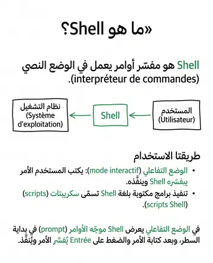
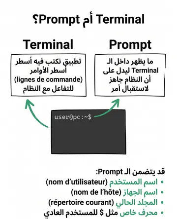
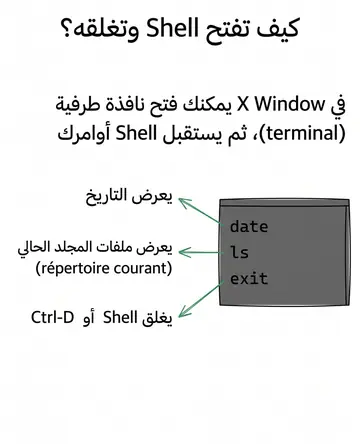
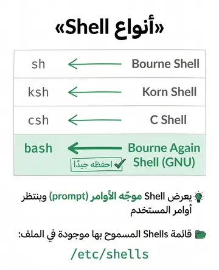
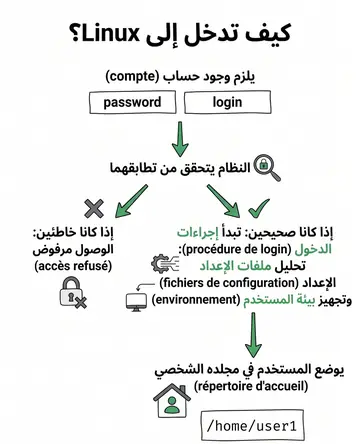
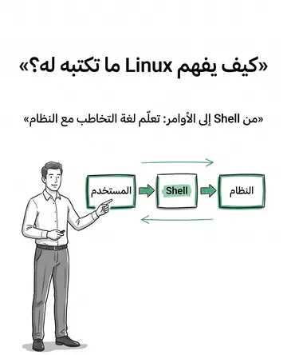
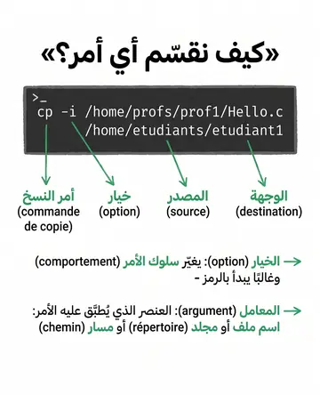
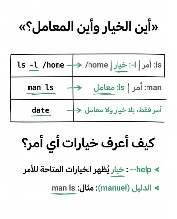
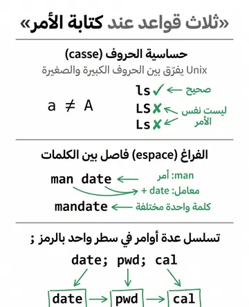
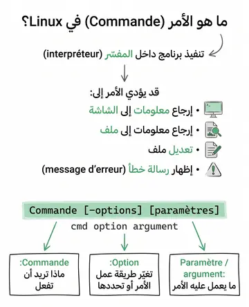
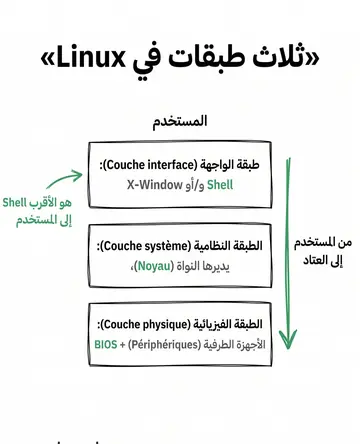
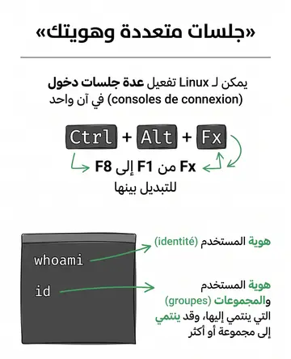
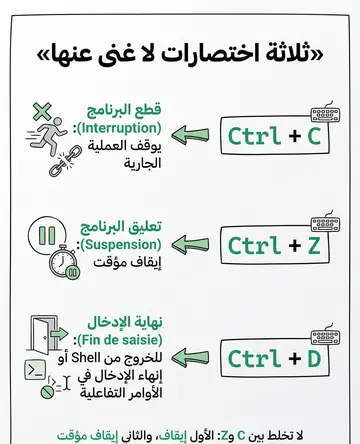
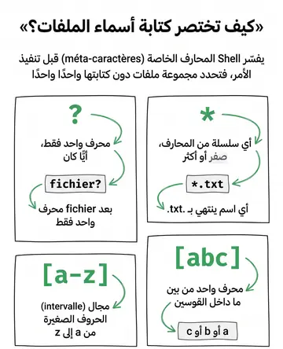
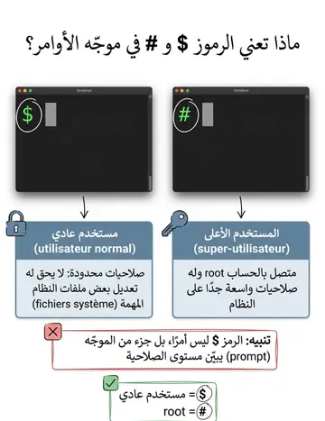
Contenu de la leçon
Le cours en français, avec les termes techniques et les exemples.
Un Shell est un interpréteur de commande en mode texte peut s'utiliser en mode interactif ou pour exécuter des programmes écrits dans le langage de programmation du Shell (appelés scripts
Shell).
En mode interactif, le Shell affiche une invite en début de ligne (prompt)
La commande est interprétée et exécutée après la frappe de la touche "Entrée”.
Terminal sous Mac
OS
Invite affiché par l'interpréteur de commande
COMMANDES DE BASE DU SHELL
Le format des commandes suit une convention bien établie :
Commande [-options] [paramètres]
Les options et les paramètres sont parfois facultatifs.
Exemple : cp -i /home/profs/prof1/Hello.c
/home/etudiants/etudiant1
cp : commande qui va lancer la fonction de copie
l'option -i : permet de contrôler certains aspects du comportement de la commande
/home/profs/prof1/Hello.c : Il s'agit de la source ou le fichier que vous souhaitez copier
/home/etudiants/etudiant1 : Il s'agit de la destination ou l'emplacement de la copie
FORMAT DES COMMANDES
sont interprétés spécialement par le Shell avant de lancer la commande entrée par l'utilisateur.
permettent de spécifier des ensembles de fichiers, sans avoir à rentrer tous leurs noms.
Voici les plus utilisés :
* : remplacé par n'importe quelle suite de caractères
? : remplacé par un seul caractère quelconque
[ ] : remplacé par l'un des caractères mentionnés entre les crochets. On peut spécifier un intervalle avec
- : [a-z] spécifie donc l'ensemble des lettres minuscules
MÉTA-CARACTÈRES DU SHELL
La couche physique : Périphériques et BIOS
La couche système : Gérée par le noyau
La couche interface : le Shell et/ou le système X-Window
ARCHITECTURE DE LINUX
Pour utiliser un système Linux sur une machine, il faut avoir un compte
sur cette machine et rentrer au clavier:
Son nom d’utilisateur : login
Son mot de passe : password
Le système vérifie la correspondance entre le login et le mot de passe
Si échec, il refuse l’accès.
Si correct, il lance la procédure de login (analyse différents fichiers de configuration et met en place l’environnement de l’utilisateur).
L’utilisateur est alors placé dans son répertoire d’accueil : c-à-d
/home/user1
SE LOGGER SUR LINUX
Si vous souhaitez changer votre mot de passe, la commande pour réaliser cette opération est : passwd ou yppasswd
CHANGER LE MOT DE PASSE
% yppasswdChanging NIS password for USER on MACHINE
Old password: --entrez votre mot de passe courant
New password: --entrez votre nouveau mot de passe
Retype new password: --rentrez votre mot de passe
NIS entry has changed on filemon
LES SHELLS
Un shell est la liaison la plus élémentaire entre l'utilisateur et le système d'exploitation, c'est-à-dire le programme de gestion de la ligne de commande.
Les commandes saisies sont interprétées par le shell et transmises au système d'exploitation.
QU’APPELLE T’ON UN SHELL
QUEL SHELL ?
Le shell affiche un «prompt» et attend les commandes de l’utilisateur
Il en existe plusieurs avec des fonctionnalités et des interfaces différentes les uns des autres
sh : Bourne Shell (shell standard)
ksh : Korn Shell
csh : C Shell
bash : GNU (Bourne Again Shell)
Pour savoir quel shell est utilisé, tapez :
Le liste des shells autorisés : /etc/shells
Ouverture du shell (sous X Window) :
Cliquer sur l'icône représentant le shell, ou sélectionner « ouvrir un terminal » dans le menu droit de la souris.
A ce point le shell peut recevoir des commandes:
Exemples :
date : affiche la date ls : liste les fichiers du répertoire courant
Fermeture du shell :
Commande exit
Ctrl-D
SHELL
Il contient généralement des informations utiles comme :
Nom d'utilisateur : Qui montre quel utilisateur est connecté.
Nom de l'hôte : Le nom de l'ordinateur ou du serveur.
Répertoire courant : Le dossier dans lequel tu te trouves actuellement.
Caractère spécial : Comme $ pour les utilisateurs normaux
PROMPT
Terminal : C'est l'interface qui te permet d'interagir avec le système d'exploitation via des lignes de commande. C'est l'application où tu tapes tes commandes.
Prompt : C'est l'affichage dans le terminal qui indique que le système est prêt à recevoir une commande. Il apparaît généralement à la fin d'une ligne, avant que tu commences à taper ta commande.
Il est possible sous Linux d’activer simultanément plusieurs consoles de connexion.
Le basculement entre les consoles est obtenu par la combinaison de touches
<ctrl–alt–Fx>; où Fx représente les touches de function F1 à F8.
TERMINAL VS PROMPT
Pour Linux, l’identité d’un utilisateur est celle sous laquelle il se logge
La commande whoami vous donne votre identité
L’utilisateur appartient également à un ou plusieurs groupes
La commande id vous donne votre identité et votre groupe
QUELLE EST MON IDENTITÉ
Une commande est l'exécution d'un programme dans l'interpréteur.
Elle prend en entrée des options et/ou des paramètres.
Elle peut renvoyer des informations à l'écran ou dans un fichier, modifier un fichier, ou produire un message d'erreur.
Une commande est composée en premier lieu d'un code, suivi
parfois d'options ou de paramètres :
$ cmd option argumentPour obtenir toutes les options d'une commande, il suffit d'appeler l'option --help.
COMMANDES LINUX
$ commandeoptions arguments
Les options (souvent très nombreuses) permettent de modifier le comportement de la commande.
En général elles sont précédées du signe '-' (e.g. ls -l)
Certaines commandes utilisent des arguments (e.g.
nom de fichier) Il y a un manuel en ligne: man ls
COMMANDES LINUX
Unix est sensible à la casse a != A
ls != LS ou de LsUnix utilise l'espace comme séparateur de commandes
Exemple :
man date et non mandate
COMMANDES LINUX
$ date; pwd; callun fév 25 22:29:09 CET 2013
/usr/share/man/man9 février 2024 di lu ma me je ve sa
1 2
3 4 5 6 7 8 9
10 11 12 13 14 15 16
COMMANDES LINUX : CHAÎNER LES
COMMANDES
Quelques séquences de raccourcis à connaître :
COMMANDES LINUX
Raccourci
Description
Utilisation
[Ctrl] + C
Interruption du programme
Arrête un processus qui ne répond pas ou une tâche en cours.
[Ctrl] + Z
Suspension du programme
- Envoie un signal de suspension (SIGTSTP) au programme, le mettant en pause.
[Ctrl] + D
Fin de saisie sur un prompt
Utilisé pour quitter un shell ou arrêter la saisie dans des commandes interactives.